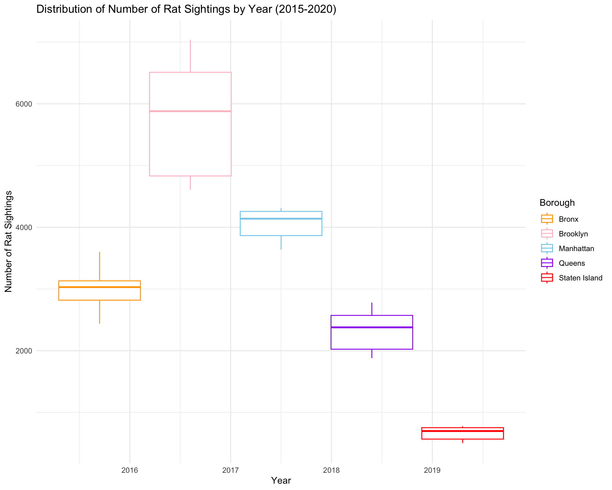

Manhattan Rat Sighting Data

Bar Plot: Average Annual Rat Sightings across Boroughs
Code
# Filter data for the years 2015-2020
barplot_rat_data <- rat_sightings_data %>%
filter(year_created >= 2015 & year_created <= 2020)
# Calculate the average annual rat sightings by borough
average_sightings_by_borough <- barplot_rat_data %>%
group_by(year_created, borough) %>%
summarise(average_sightings = n() / length(unique(month_created)))## `summarise()` has grouped output by 'year_created'. You can override using the
## `.groups` argument.Monthly Trends in NYC Rat Sightings (2015-2020)
Code
# Filter data for the years 2015-2019
filtered_rat_data <- rat_sightings_data %>%
filter(year_created >= 2015 & year_created <= 2019)
# Line plot for the number of rat sightings by month with points
ggplot(filtered_rat_data, aes(x = month_created, group = year_created)) +
geom_line(aes(y = after_stat(count), color = factor(year_created)), stat = "count") +
geom_point(aes(y = after_stat(count), color = factor(year_created)), stat = "count", size = 2) +
labs(title = "Number of Rat Sightings by Month (2015-2020)",
x = "Month",
y = "Number of Rat Sightings") +
scale_x_discrete(labels = c("Jan", "Feb", "Mar", "Apr", "May", "Jun", "Jul", "Aug", "Sep", "Oct", "Nov", "Dec")) +
scale_color_discrete(name = "Year") +
theme_minimal()
Residential Rat Sightings by Borough
Code
# Specify the desired location types
desired_location_types <- c(
"3+ Family Apt. Building",
"1-2 Family Dwelling",
"3+ Family Mixed Use Building",
"1-2 Family Mixed Use Building",
"3+ Family Apartment Building",
"Single Room Occupancy (SRO)",
"Apartment",
"Residence",
"1-3 Family Dwelling",
"Residential Property",
"1-3 Family Mixed Use Building",
"3+ Family Apt., Private House"
)
# Create a new dataset with only residential sightings
residential_sightings <- rat_sightings_data %>%
filter(location_type %in% desired_location_types)
# Step 1: Calculate the count of residential rat sightings by borough
residential_counts <- residential_sightings %>%
group_by(borough) %>%
summarise(residential_count = n())
# Step 2: Calculate the total count of rat sightings by borough
total_counts <- rat_sightings_data %>%
group_by(borough) %>%
summarise(total_count = n())
# Step 3: Merge the two datasets and calculate the proportion
borough_proportions <- merge(residential_counts, total_counts, by = "borough", all.x = TRUE) %>%
mutate(proportion_residential = residential_count / total_count)
# Print the result
knitr::kable(borough_proportions)
# Create an interactive bar plot
plot_ly(
data = borough_proportions,
x = ~borough,
y = ~proportion_residential,
type = "bar",
marker = list(color = c("skyblue", "orange", "pink", "purple", "red"))
) %>%
layout(
title = "Proportion of Residential Rat Sightings by Borough",
xaxis = list(title = "Borough"),
yaxis = list(title = "Proportion"),
showlegend = FALSE
)| borough | residential_count | total_count | proportion_residential |
|---|---|---|---|
| Bronx | 14757 | 18013 | 0.8192417 |
| Brooklyn | 24263 | 34610 | 0.7010402 |
| Manhattan | 15800 | 24300 | 0.6502058 |
| Queens | 9648 | 13957 | 0.6912660 |
| Staten Island | 2776 | 3967 | 0.6997731 |
Rat Sightings Distribution by Year by Borough
Code
avg_rat_sightings_box =
rat_sightings_data %>%
mutate(unique_key = as_factor(unique_key)) %>%
group_by(year_created, borough) %>%
summarize(count = n_distinct(unique_key))
avg_rat_sightings_box %>%
ggplot(aes(x = year_created, y = count, color = borough)) +
geom_boxplot() +
labs(title = "Distribution of Number of Rat Sightings by Year (2015-2020)",
x = "Year",
y = "Number of Rat Sightings") +
scale_color_manual(name = "Borough", values = c("Manhattan" = "skyblue", "Bronx" = "orange", "Brooklyn" = "pink", "Queens" = "purple", "Staten Island" = "red")) +
theme_minimal() +
theme(legend.position = "right")
## Plotly Box Plot
plot_ly(
data = avg_rat_sightings_box,
y = ~count,
color = ~borough,
type = "box",
colors = c("skyblue", "orange", "pink", "purple", "red")
) %>%
layout(
title = "Distribution of Number of Rat Sightings by Year (2015-2020)",
xaxis = list(title = "Year"),
yaxis = list(title = "Number of Rat Sightings"),
legend = list(title = "Borough"),
showlegend = TRUE
)